# load packages
library(tidyverse)
library(tidymodels)
library(knitr)
library(patchwork)
# set default theme in ggplot2
ggplot2::theme_set(ggplot2::theme_bw())Variable transformations
Transforming predictors
Announcements
Project exploratory data analysis - due October 29 on GitHub
HW 04 - due October 30 at 11:59pm
Statistics experience - due November 24 at 11:59pm
Upcoming dates
November 12: Exam 02
November 23: Project presentations in lab
November 24: No lecture - finish statistics experience
Computing set up
Topics
- Log-transformation on predictor variable(s)
- Identifying linear models
Variable transformations
Data: Life expectancy in 140 countries
The data set comes from Zarulli et al. (2021) who analyze the effects of a country’s healthcare expenditures and other factors on the country’s life expectancy. The data are originally from the Human Development Database and World Health Organization.
There are 140 countries (observations) in the data set.
Click here for the original research paper.
Variables
life_exp: The average number of years that a newborn could expect to live, if he or she were to pass through life exposed to the sex- and age-specific death rates prevailing at the time of his or her birth, for a specific year, in a given country, territory, or geographic income_inequality. ( from the World Health Organization)income_inequality: Measure of the deviation of the distribution of income among individuals or households within a country from a perfectly equal distribution. A value of 0 represents absolute equality, a value of 100 absolute inequality (based on Gini coefficient). (from Zarulli et al. (2021))
Variables
education: Indicator of whether a country’s education index is above (High) or below (Low) the median index for the 140 countries in the data set.- Education index: Average of mean years of schooling (of adults) and expected years of school (of children), both expressed as an index obtained by scaling wit the corresponding maxima.
health_expend: Per capita current spending on on healthcare goods and services, expressed in respective currency - international Purchasing Power Parity (PPP) dollar (from the World Health Organization)
Exploratory data analysis
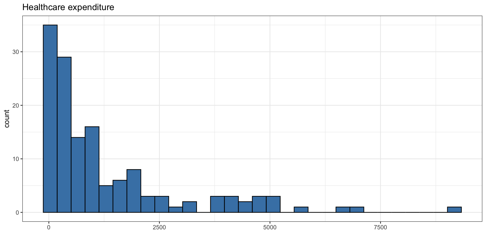
Exploratory data analysis
The goal is to use income inequality and education to understand variability in healthcare expenditure.
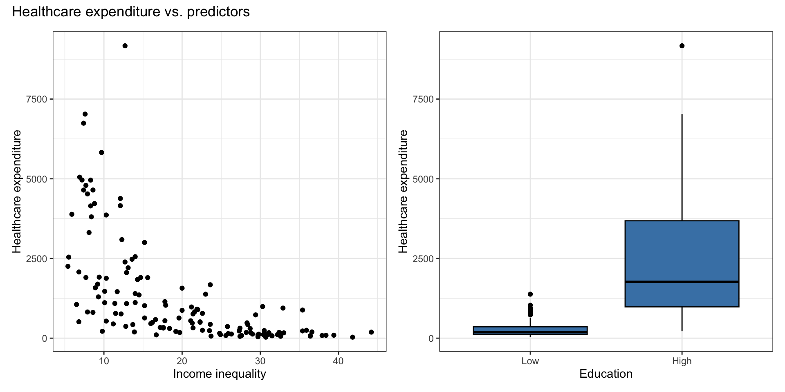
Original model
health_fit <- lm(health_expenditure ~ income_inequality + education,
data = health_data)| term | estimate | std.error | statistic | p.value |
|---|---|---|---|---|
| (Intercept) | 2070.599 | 534.653 | 3.873 | 0.000 |
| income_inequality | -64.346 | 18.626 | -3.455 | 0.001 |
| educationHigh | 1039.298 | 359.736 | 2.889 | 0.004 |
Review: Transformation on \(y\)
Original model: Residuals vs. fitted
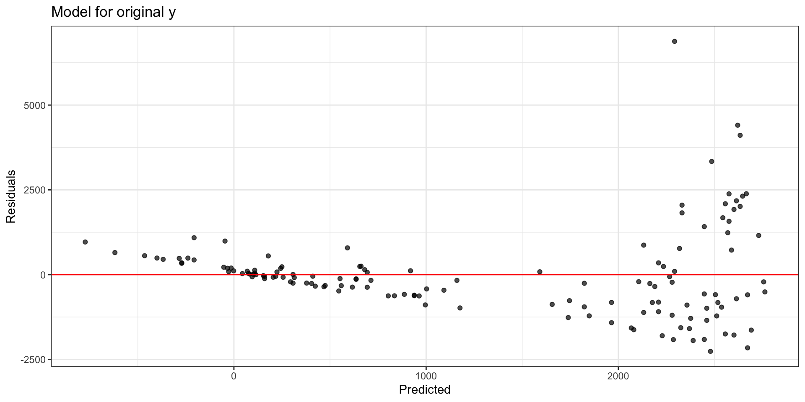
Linearity and equal variance are not satisfied.
Consider different transformations…
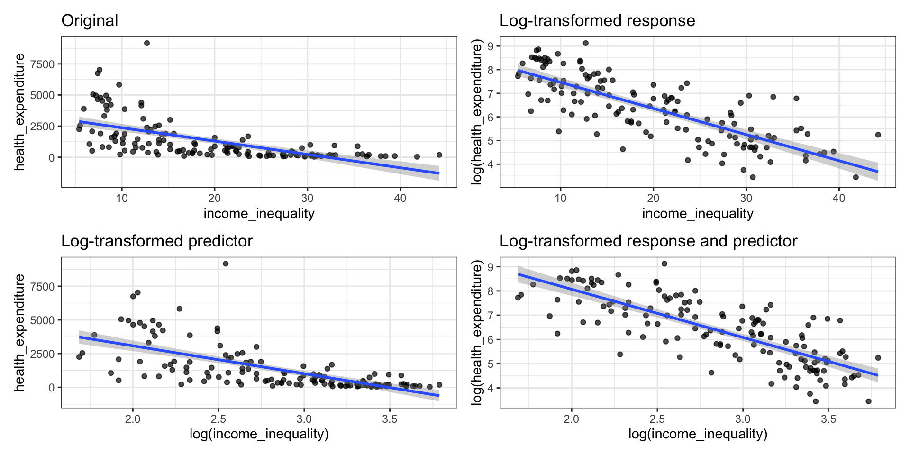
Log transformation on \(\mathbf{y}\)
- If we apply a log transformation to the response variable, we want to estimate the parameters for the statistical model
\[ \log(\mathbf{y}) = \mathbf{X}\boldsymbol{\beta} + \boldsymbol{\epsilon}, \quad \boldsymbol{\epsilon} \sim N(\mathbf{0}, \sigma^2\mathbf{I}) \]
- The regression equation is
\[\widehat{\log(\mathbf{y})} = \mathbf{X}\hat{\boldsymbol{\beta}}\]
Distribution of \(\mathbf{y}\) and \(\log(\mathbf{y})\)
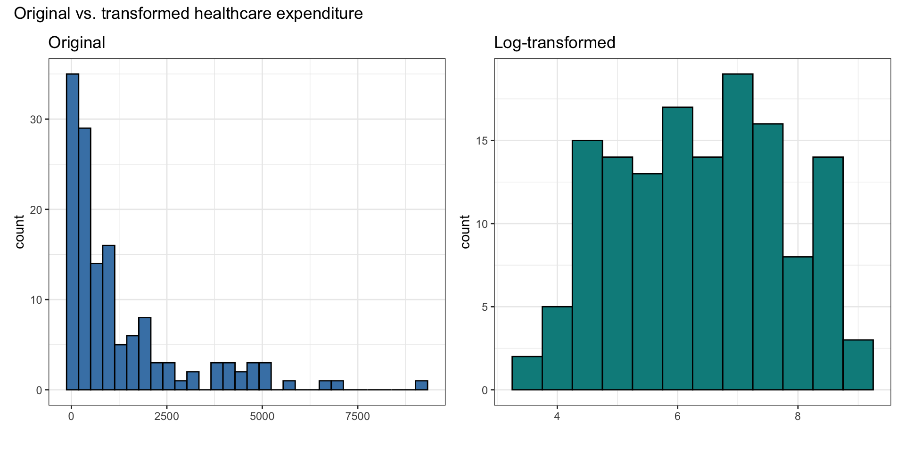
Model with \(\log(\mathbf{y})\)
health_logy_fit <- lm(log(health_expenditure) ~ income_inequality + education,
data = health_data)| term | estimate | std.error | statistic | p.value |
|---|---|---|---|---|
| (Intercept) | 7.096 | 0.324 | 21.895 | 0 |
| income_inequality | -0.065 | 0.011 | -5.714 | 0 |
| educationHigh | 1.117 | 0.218 | 5.121 | 0 |
Compare residual plots
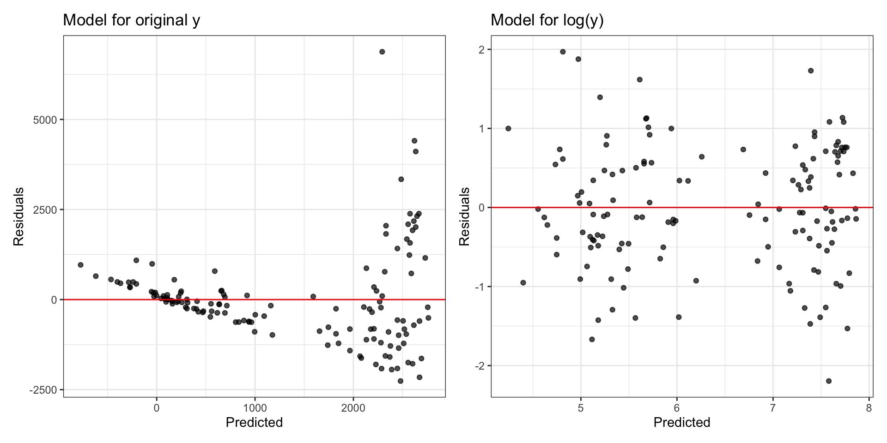
Interpretation
| term | estimate | std.error | statistic | p.value |
|---|---|---|---|---|
| (Intercept) | 7.096 | 0.324 | 21.895 | 0 |
| income_inequality | -0.065 | 0.011 | -5.714 | 0 |
| educationHigh | 1.117 | 0.218 | 5.121 | 0 |
For each additional point increase in the index for income inequality, a country’s healthcare expenditure is expected to multiply by a factor of 0.937 (exp(-0.065)), holding education constant.
A country with high education index is expected to have a healthcare expenditure that is 3.056 (exp(1.117)) times the healthcare expenditure of a country with low education index, holding income inequality constant.
Transformation on \(x_j\)
Variability in life expectancy
Let’s consider a model using a country’s healthcare expenditure, income inequality, and education understand variability in its life expectancy.
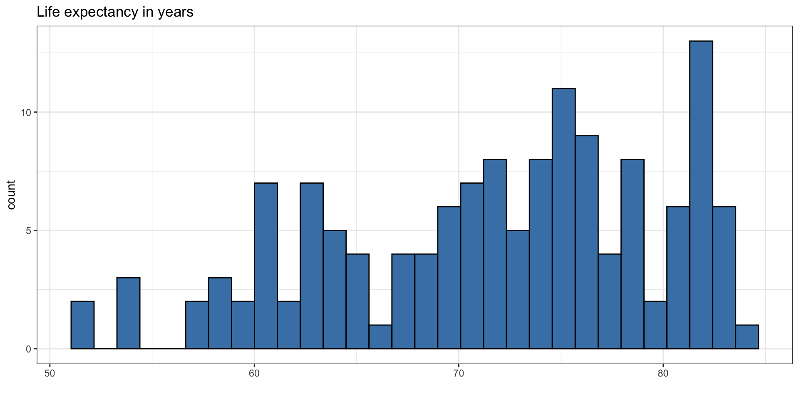
Bivariate EDA
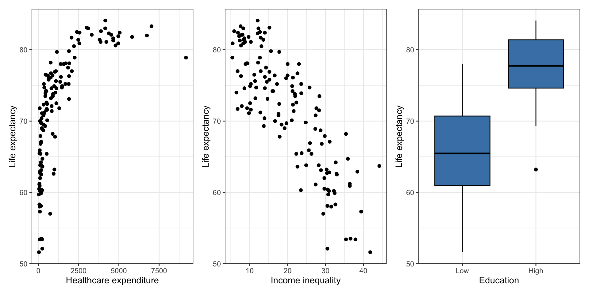
Original model
life_exp_fit <- lm(life_exp ~ health_expenditure + income_inequality + education,
data = health_data)| term | estimate | std.error | statistic | p.value |
|---|---|---|---|---|
| (Intercept) | 78.575 | 1.775 | 44.274 | 0.000 |
| health_expenditure | 0.001 | 0.000 | 4.522 | 0.000 |
| income_inequality | -0.484 | 0.061 | -7.900 | 0.000 |
| educationHigh | 2.020 | 1.168 | 1.730 | 0.086 |
Original model: Residuals
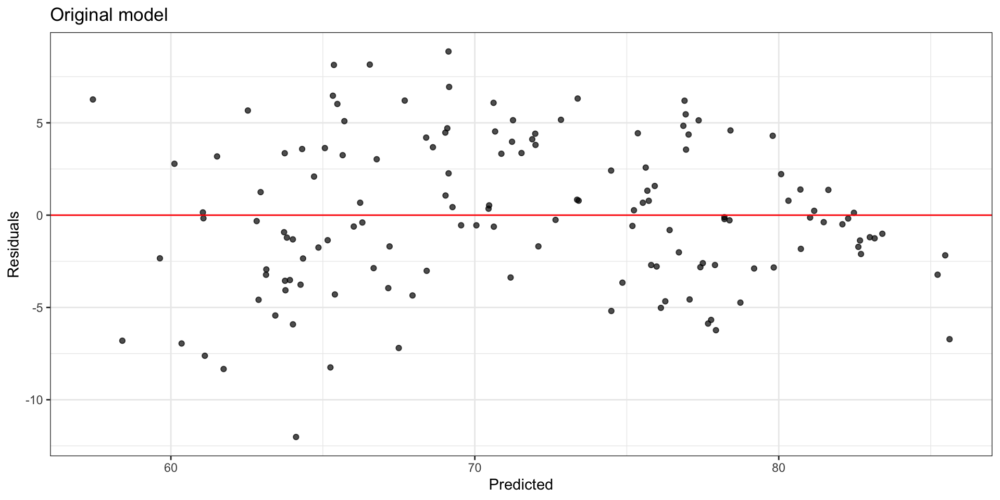
Look at residuals vs. each predictor to determine which variable has non-linear relationship with life expectancy.
Residuals vs. predictors
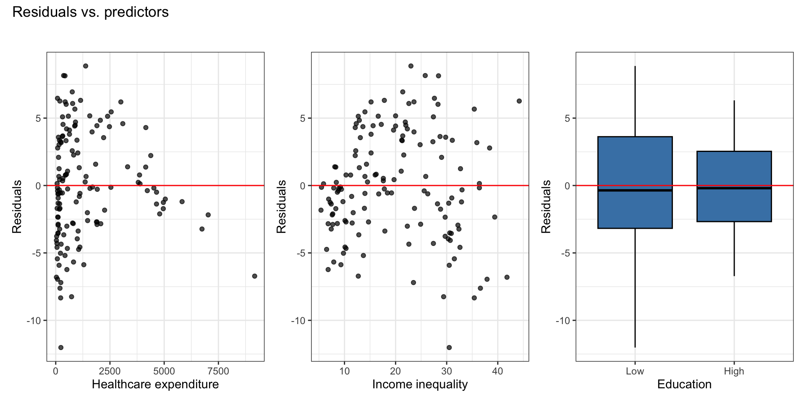
. . .
There is a non-linear relationship is between healthcare expenditure and life expectancy.
Log Transformation on \(x_j\)
Consider a transformation on predictor \(x_j\) if the scatterplot in EDA shows non-linear relationship and residuals vs. fitted looks parabolic
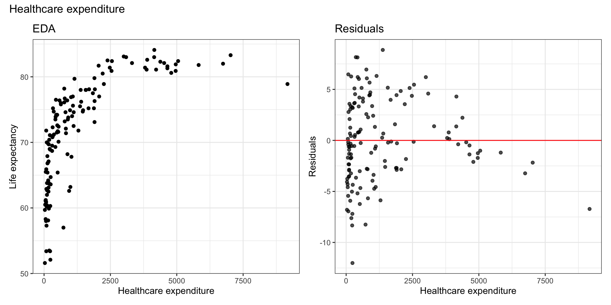
Bivariate EDA with log(health_expend)
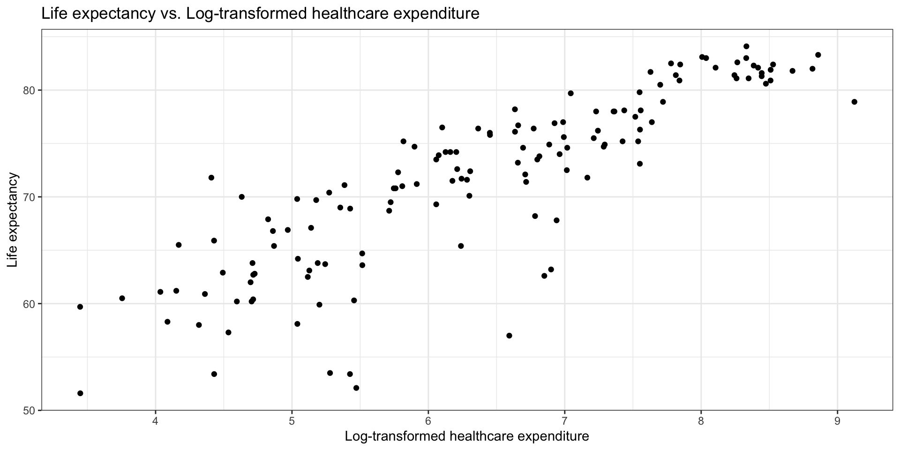
Model with Transformation on \(x_j\)
When we fit a model with predictor \(\log(x_j)\), we fit a model of the form
\[ \mathbf{y} = \mathbf{X}\boldsymbol{\beta} + \boldsymbol{\epsilon}, \quad \boldsymbol{\epsilon} \sim N(\mathbf{0}, \sigma^2\mathbf{I}) \]
such that \(\mathbf{X}\) has a column for \(\log(x_j)\) .
. . .
The estimated regression model is
\[ \begin{aligned} \hat{\mathbf{y}} &= \mathbf{X}\hat{\boldsymbol{\beta}} \\[8pt] \Rightarrow \quad &\hat{y}_i = \hat{\beta}_0 + \hat{\beta}_1x_{i1} + \ldots + \hat{\beta}_j\log(x_{ij}) + \dots + \hat{\beta}_px_{ip} \end{aligned} \]
Model with \(\log(x_j)\)
life_exp_logx_fit <- lm(life_exp ~ log(health_expenditure) + income_inequality
+ education, data = health_data)| term | estimate | std.error | statistic | p.value |
|---|---|---|---|---|
| (Intercept) | 59.151 | 3.184 | 18.576 | 0.000 |
| log(health_expenditure) | 3.092 | 0.396 | 7.814 | 0.000 |
| income_inequality | -0.362 | 0.058 | -6.225 | 0.000 |
| educationHigh | -0.168 | 1.103 | -0.152 | 0.879 |
Model with \(\log(x_j)\): Residuals
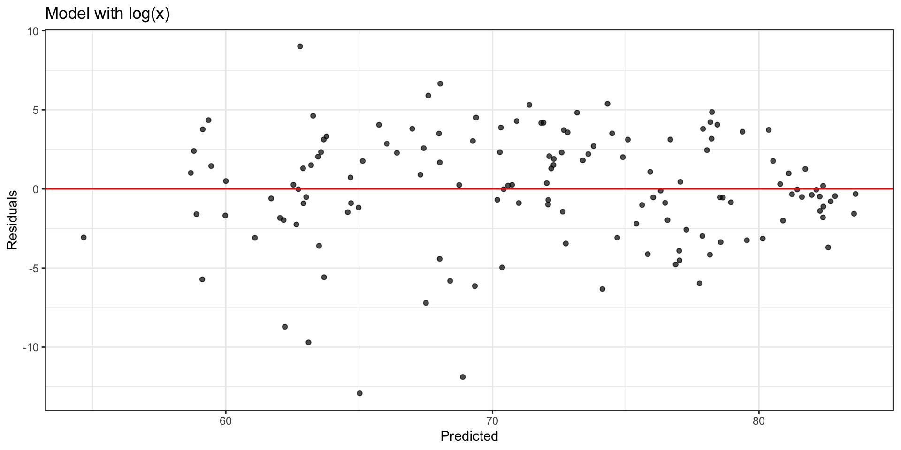
Comparing residual plots
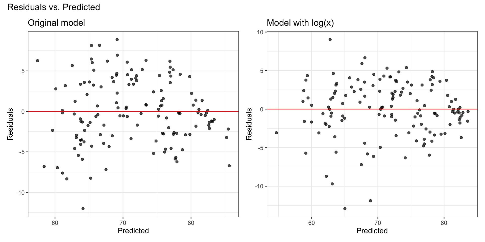
Model interpretation
\[ \hat{y}_i = \hat{\beta}_0 + \hat{\beta}_1x_{i1} + \ldots + \hat{\beta}_j\log(x_{ij}) + \dots + \hat{\beta}_px_{ip} \]
Intercept: When \(x_{i1} = \dots = \log(x_{ij}) = \dots = x_{ip} = 0\) , \(y_i\) is expected to be \(\hat{\beta}_0\).
- \(\log(x_{ij}) = 0\) when \(x_{ij} = 1\)
Coefficient of \(x_j\): When \(x_{ij}\) is multiplied by a factor of \(C\), \(y_i\) is expected to change by \(\hat{\beta}_j\log(C)\) units, on average, holding all else constant.
- Example: When \(x_{ij}\) is multiplied by a factor of 2, \(y_i\) is expected to increase by \(\hat{\beta}_j\log(2)\) units, on average, holding all else constant.
Interpretations
life_exp_logx_fit <- lm(life_exp ~ log(health_expenditure) + income_inequality
+ education, data = health_data)| term | estimate | std.error | statistic | p.value |
|---|---|---|---|---|
| (Intercept) | 59.151 | 3.184 | 18.576 | 0.000 |
| log(health_expenditure) | 3.092 | 0.396 | 7.814 | 0.000 |
| income_inequality | -0.362 | 0.058 | -6.225 | 0.000 |
| educationHigh | -0.168 | 1.103 | -0.152 | 0.879 |
Interpret the intercept in the context of the data.
Interpret the effect of a 10% increase in healthcare expenditure in the context of the data.
What is a linear model?
Is a model with log-transformed response and/or predictor still a “linear” model?
“Linear” model
What does it mean for a model to be a “linear” model?
A model is “linear” if you can write it in such a way that it is linear in the parameters, i.e. given an observation \(y_i\)
\[ y_i = \beta_0 + \beta_1f_1(x_{i1}) + \dots + \beta_pf_p(x_{ip}) + \epsilon_i \]
The functions \(f_1, \ldots, f_p\) can be non-linear as long as \(\beta_1, \ldots, \beta_p\) are linear (additive and not transformed)
Your turn: Identify the linear models
\(y_i = \beta_0 + \beta_1x_{i1} + \beta_2x_{i1}^2 + \beta_3x_{i2} + \epsilon_i\)
\(y_i = \beta_1x_{i1} + \beta_2x_{i2} + \beta_3x_{i1}x_{i2} + \epsilon_i\)
\(y_i = \beta_0 + \beta_1\sin(x_{i1} + \beta_2x_{i2}) + \beta_3x_{i3} + \epsilon_i\)
\(y_i = \beta_0 + \beta_1e^{x_{i1}} + \beta_2e^{x_{i2}} + \epsilon_i\)
\(y_i =e^{(\beta_0 + \beta_1x_{i1} + \beta_2x_{i2} + \beta_3x_{i3})} + \epsilon_i\)
Your turn - Identify the linear models
Select all the linear models.
Recap
Reviewed log-transformation on response variable
Introduced log-transformation on predictor variable(s)
Identified linear models
Before next class
- Complete Lecture 18 prepare
References
Zarulli, Virginia, Elizaveta Sopina, Veronica Toffolutti, and Adam Lenart. 2021. “Health Care System Efficiency and Life Expectancy: A 140-Country Study.” PLOS ONE 16 (7): e0253450. https://doi.org/10.1371/journal.pone.0253450.